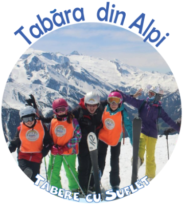

/ Tabere Schi si Snowboard / Tabara din Alpi
/ Tabere Schi si Snowboard / Tabara din Alpi

Cand? 3 - 10 ian 2027
Unde? La Mayrhofen, in Austria. Vom sta la Haus Grunberg, o pensiune cocheta din Finkenberg, aflata chiar langa telegondola:) Detalii Cazare
Alte Tabere de Schi si Snowboard in Alpi
Ce facem? Vom profita ca suntem in unul dintre cele mai mari spatii schiabile din Austria si, timp de 6 zile, ne vom bucura din plin de sutele de km de partii! Practic, daca am cobori o data pe fiecare partie, nu ne-ar ajunge timpul intr-o saptamana sa le acoperim pe toate!
Vom avea de ales intre Zell im Zillertal, Mayrhofen, Gerlos, Wald-Königsleiten, Kriml si Hochkrimml, statiuni ce fac parte din spatiul schaibil Zillertal Arena. O alta zona unde putem schia este regiunea Hochzillertal – Hochfügen – Spieljoch, unde se afla mai multe trasee minunate de freeride. De asemenea, vom avea la dispozitie partiile din regiunea Penken - Rastkogel - Eggalm, inclusiv renumita Harakiri - partia cu cea mai mare inclinare din Austria, precum si alte domenii mai mici, precum Wildkogel-Arena. Nu in ultimul rand, vom urca pe ghetarul Hintertux - cel mai mare din Austria cu cei 59 km de partii, unde, sub Vf.Oplerer (3476 m), se poate schia tot timpul anului. Mai multe detalii
Iar la sfarsitul zilei distractia va continua, caci vom merge la piscina, la sala de catarat sau la Water Park:)
Daca vreti sa revedeti poze din anii trecuti:
2017 | 2018 | 2019 | 2024 | 2026
Detalii tabara
Varsta recomandata: 8-19 ani
Cat costa? Contributia pentru aceasta tabara este de 1700 Euro.
Pentru tinerii de 16-19 ani este un cost suplimentar de la skipass.
Ce asiguram? Transportul cu avionul, transferul de la aeroport (215 km), cazare 7 nopti cu demipensiune, pranz pe partie, skipass 6 zile valabil pentru Zillertal Arena si ghetarul Hintertux, transfer la partie, supraveghere copii si o experienta memorabila:)
Mai multe detalii
Oferte? Membrii Asociatiei pot beneficia de o reducere de 7% pentru plata unui avans cu minim patru luni inainte de inceperea taberei, prin programul Early Booking EB10 Mai multe detalii
Cum rezerv? Rezervarea devine ferma dupa plata unui avans de 50%.
Termenul pentru plata avansului este cu 90 zile inainte de inceperea taberei, iar plata se poate face cash sau in Contul Asociatiei. Dupa aceasta data, daca mai sunt locuri, contributia poate sa creasca.
La detalii plata va rugam sa treceti "Contract Sponsorizare", iar dupa ce faceti plata, va rugam sa ne confirmati printr-un simplu email. Contact
Contractul se gaseste aici. Pentru validarea inscrierii, va rugam sa il completati si sa ni-l transmiteti.
Asociatia Tabere cu Suflet: Aceasta tabara este deschisa exclusiv pentru membrii Asociatiei Tabere cu Suflet. Mai multe detalii
Daca nu sunteti membru si doriti sa deveniti, va rugam sa consultati Conditiile de Aderare, apoi sa completati Formularul de Inscriere si sa semnati Cererea de Adeziune.
WeCare Prin achitarea integrala a costului taberelor, ajutati un copil fara posibilitati materiale sa vina gratuit in tabere! 3% din costul total al taberei este directionat catre programul WeCare Zambet pentru toti Copiii, prin care oferim ajutor copiilor defavorizati. Mai multe detalii